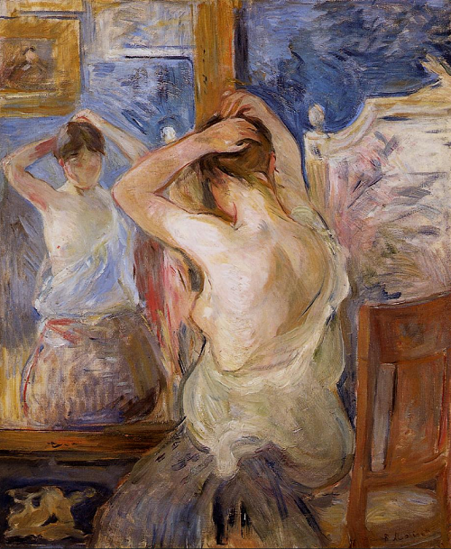
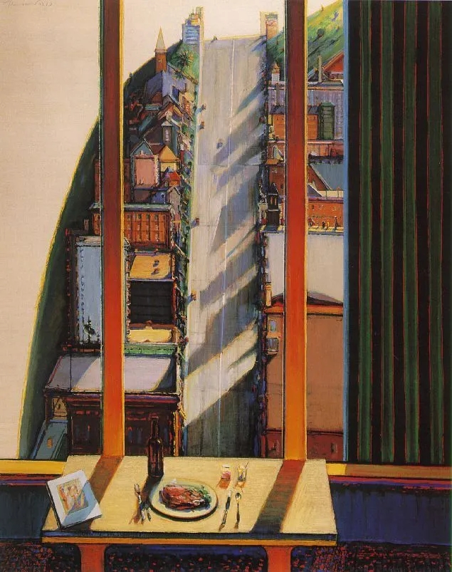

Chiasme

发件人：逸秋 <1787488920@qq.com>
时 间：2021年3月8日（星期一）上午5 : 30
收件人：
孙奥龙 <1042483116@qq.com>
To：超级无敌特别尤其让秋秋想念的龙龙...
龙龙，我现在刚刚吃完土豆泥和鱼！都不是很好吃哈哈哈，然后现在一边听你给我推的歌，一边写邮件啦。
我真的好想你好想你好想你！！！
we are still kids but we're so in love
fighting against all odds
i know we'll be alright this time
Darling just hold my hand
be my man i'll be your girl
这个星期我身上没有什么特别的事情，就是写完了论文，然后又要准备考试。人们面对疫情逐渐麻木，我也在一波接一波的deadline面前麻木了，今天去散步的时候路过高尔夫球场，里面每个人拖着个装球杆儿和球的小袋子，大步走在草坪上，远处还有三个热气球，今天的湖边人也很多，大家都喜欢晒太阳呀。每次出去的时候我总是觉得，啊，这才是生活~明明不远处就有湖泊和天鹅，大片的绿地，为什么我却百分之九十的时间都呆在自己的宿舍呢？以前在华师的时候，每周或是每两周我都会约朋友出去玩一次，龙龙还记得上次秋秋和傻狗乐的大姐大去逛街吗~我抬起手摸云的那张照片你说很好看呢！之前也和傻狗乐专门去外婆家吃红烧肉嘻嘻嘻。还有和吴悠出去玩~比如打折的时候卖衣服的店里人很多，我们就可以试好多次衣服，因为我们两个平常都不穿很女孩子的那种裙子，我记得那天我们互相帮对方挑，专门挑那种雪纺，花边，蕾丝的...然后我们还一起在试衣间！！！不过我背着她脱衣服的！！因为我很保守！还有和她去唱歌歌，去光谷吃小吃~不过后来因为她一直有男朋友，我们出去的就少了，我记得之前还很羡慕她...因为总是觉得有男朋友真好，有人陪着吃饭，散步，有人宠着关心着，你也可以去把爱全部的给他，可是我大部分时间都是一个人。神殿经常在群里约饭，但她们都经常在宿舍，去东一或者学子食堂（上次我带你去的那个~），我经常在图书馆，而且有的时候习惯了孤独也还行，只不过情感上一直是空虚的！在吴悠的影响下吧，后来有段时期也变得特别想找一个，但是一旦以很强的目的性去开启一段关系，一切都变味了...这也是为什么表白墙上找对象其实成功率很低？啊啊啊为什么写到这里了....总结：大一大二的生活多么轻松啊，那时候有大把的时间谈恋爱，学习，参加比赛，充满了无限可能，现在我的生活已经差不多只有学习了...当我把生活等同于学习的时候，我不会觉得委屈自己，因为我习惯了...今天出去发现才豁然发现很多人活的与我不同。
我觉得自己这几年其实成长蛮多的。也很庆幸是在大二遇见了你，大一的我还是个小孩子...很多想法都很肤浅，也不脚踏实地，没有找到来大学的真正目的。大二我就不一样了，虽然也会“露馅”，很贪玩...但是至少体验过了孤独的快乐？大二下成为你的女朋友是我大学最幸运的事情，不是电视剧里经常说：一个人在人生中的出场顺序很重要吗！你恰恰在最合适的时候出现在我面前，在20年的夏天我们相见，相知，相爱，然后再是彼此承诺，共同规划未来...你说过我让你有了归属感，我又何尝不是呢。大学的普通朋友其实很局限，因为大部分都是酒肉朋友...吴悠走进了我的心里，因为我们很多地方相似，我们一起弄比赛，一起自习，一起聊男生，一起吃饭，玩，等等。我知道她的孤独焦虑，她也知道我的！而且我们都很包容！！！敢于尝试新事物！我有时候觉得只有吴悠才能做我的闺蜜，她是我20岁之前遇见的和我聊得最来的人，但是要说她给我归属感...沾边了，但是比较勉强。你是给我归属感的人，有句歌词是：幸福没那么容易，所以才有这么多人为它着迷...我们虽然见面时间不长呜呜呜，【好像真的见面时间不长！！！！！！！！！我们见面的天数加起来不超过二十天吧....呜呜】但你让我感觉到不再孤军奋斗！！只要每天提醒我我现在做的事情是为了以后可以每天和你见面，牵手，接吻，拥抱，我就充满了动力！！为了我爱的人和爱我的人，李亦秋，你要加油呀！！！我现在仿佛陷入了一种新的激情中...这激情比高三面对高考时还要强烈，我迫不及待与你见面，与你一起面对挑战或是机会，我甚至幻想过那天---我们确定能在同一个城市共同度过三年的那天，一切担心与不安都烟消云散，我们会多么激动与兴奋，我们会一直紧紧地抱着对方...或者我们一起绕着操场狂奔！！
不过龙龙，我们现在是不是已经走出热恋期了呢？秋秋依然很想你，不过我好久没有给你发羞羞照了，龙龙也没有当初那样啊啊啊啊啊了。有时候龙龙对我发的消息比较敷衍，我就会猜你在看剧，csgo或者看书，学习，你有事情的时候我就不想去打扰你了，因为我也知道你你除了和我聊天，还是有很多自己的兴趣和要做的事情的！今晚因为wps的对话让我发现其实我们都有隐私...虽然这是一定的，可是今晚当这个道理被明摆出来的时候，我还是会有不开心，我是不是只喜欢听腻腻的情话啊....
From Lady Qiu

发件人：孙奥龙 <1042483116@qq.com>
时 间：2021年3月15日（星期一）上午11 : 56
收件人：
逸秋 <1787488920@qq.com>
致轻与重的结合体——我的亦秋：
秋秋，又过去了一周！你说这周过的很漫长，而我则觉得太快了！快到我甚至觉得三四天前才给你写了信。原因有哪些呢，我感觉是融入了校园生活的节奏吧，早上起来做大创，看剧，打游戏或是弹琴，下午上课，晚上去自习室看书……然后到周四就出去玩一下，这样一来我又落入规律化的生活的圈套啦！现在课少，我自由支配时间的就多，还搞了大创，平时还总和同学聊未来，聊年薪，就感觉——我已经逐渐摆脱本科生这样一种身份了！本科生似乎还是高中生活的延续，自由度还不是很高，但一旦到研究生，或者工作，就完全不一样了! 从此开始要开始谈论与金钱有关的东西，要自主、自觉的去搞科研或工作，因为不会再有人催了！想想以后工作拿工资，花自己挣的钱去干自己想干的事，花自己的钱给我爱的秋秋买各种东西，就感觉无比激动呢~
秋秋，有些事情你真的想多了！！！比如你觉得我昨天分享少了是因为前天晚上，可是并没有啊！！我给你拍了我吃的炒饭，给你拍了光电大楼，还有前辈们做的电路板呢！至于烧烤，是我同学请客，你懂的吧，拍照的话不大好！跟室友一起出去聚餐，拍照当然就没问题啦；但别人请客就不一样啦，除非别人先拍照哦。我感觉我现在语言能力在逐渐丧失，我的句子都好短啊，没有那种长难句~
为什么把秋秋称作轻与重的结合体呢？因为我看昆德拉的书看中毒啦~在《不能承受的生命之轻》里，昆德拉引入了轻与重的对立概念，说永恒是重，非永恒是轻，忠诚是重，放荡是轻。而在文中有几个典型角色，就分别是轻，重，轻重结合体的代表。女主特蕾莎，对男主托马斯忠贞不二，只爱他一个男人，对他有强烈的依赖，对他的放荡的婚外性友谊有着强烈而无奈的痛苦，她想过报复，与酒吧里的一个男人上了床，但这并没有给她带来快感，反而带来了惊恐，因为她的本性就是“重”；男主托马斯，本来发誓说不结婚，只发展性友谊，以“轻”作为自己的座右铭，但特蕾莎一进入托马斯的生活，托马斯就意识到离不开她了——因为他无法承受生命之轻，他需要特蕾莎，需要她的沉重把他拴在地面上，在书中总是出现这样一幕：托马斯想起特蕾莎刚走进他的生活时的样子，方法一个婴儿，躺在竹篮里沿着河流漂向他，等待他有力的臂膀将她抱起；而另一个就是女二（？其实这本书里没有主角配角之分，这也是昆德拉小说的特点）萨比娜，她以背叛为乐，始终坚守“轻”，最著名的一个场景是她和一个男人做爱，但她已经决定第二天就离开那个男人，于是在做爱时格外兴奋且格外主动（她以背叛为乐，背叛给她带来性刺激），与此同时那个男人却把她的举动视作爱情的象征，幻想着他们以后能一直走下去。这样一种对立而讽刺的场景将萨比娜的轻展现得淋漓尽致。
而最后，萨比娜只身前往美国，托马斯与特蕾莎回到了乡村里居住，回到了一种牧歌般的生活，每日耕田、施肥，与村民聚餐喝酒。我相信昆德拉歌颂的就是田园牧歌般的生活，只有在这里，人的伪善、邪恶、贪欲才会被压制到最小。“幸福是对重复的渴望。”他写道：“卡列宁如果不是一条狗，而是一个人的话，它肯定早就对特蕾莎这么说了：‘听我说，我不乐意一年到头嘴里叼着一个羊角面包。你就不能给我弄点新鲜的东西吃吗？’这句话蕴含着对人类的谴责。人类时间不是循环转动的，而是直线前进。这就是为什么人类不可能幸福的缘故，因为幸福是对重复的渴望。”
这本书里还有很多与政治和媚俗有关的内容，比方说故事的背景就是布拉格之春前后。布拉格之春是什么呢？1968年的捷克斯洛伐克社会主义共和国有民主化的倾向，国内的舆论空间逐渐扩大，似乎正在脱离苏联的控制；苏联见状直接派遣大量坦克飞机占领了捷克，把领导人全抓了去，关了六天，让他们写了检讨，写了一表忠心的演讲稿，在捷克民众面前演讲。捷克人看见自己的祖国就这样被苏联羞辱，有的屈从，有的反抗，有的逃离，其中昆德拉就是逃离的一员，他去了法国，之后也一直用法语写作。
那么……为什么把秋秋称作是轻与重的结合体呢？因为秋秋是野性和理智的结合体啊！秋秋为我的生活带来了突破平庸的可能，我们可以干一些大胆、鲁莽的事，可以一起疯狂而不用担心另一方不在节奏上；与此同时，秋秋也是理智的，主要体现在学习上吧~秋秋比我乖多了呢，也比我认真多了！秋秋给我发的那首诗，是古诗吗？好多神话故事的堆砌，感觉现在没有人这样写了。秋秋要多和同学一起玩！！！多主动约约嘛！！不管怎么，异地已经要进入尾声了！！我会在桂子山下的桂中路等你哟！！不见不散啦~
爱你！！
SAL, from hust,
2020.3.15